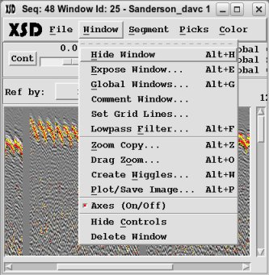
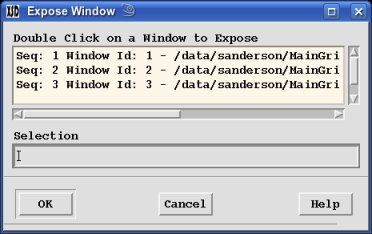
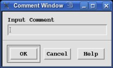
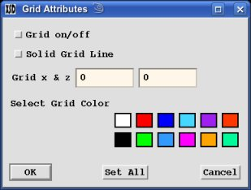
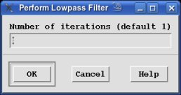
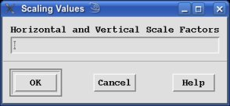

Various Display Window functions are available through the "Window" menu panel.
- Hide Window:
Selecting this menu button will hide the current Display Window. The window can
be un-hidden through either selecting "Window→Expose Window" or
"Window→Global Windows".
- Expose Window:

Select this button to pop-up the "Expose Window". Select one of the existing
Display Windows and the press the "OK" button (or double click on
a listed Display Window). The selected Display Window will be exposed.
- Global Windows:
Select this button to pop-up the "Global Window" which provides various functions
for multiple Display Windows.
(see "Global Window").
- Comment Window:

Select this button to pop-up the "Comment Window". Input (or modify) the comment
for the current Display Window and press the "Enter" key or press the
"OK" button. The comment will be kept with the Display Window and
will show up in the window title and when listed in the "Expose Window" and the
"Global Window" lists.
- Set Grid Lines:

Select this button to pop-up the "Grid Attributes Window". Select the
"Grid on/off" toggle to turn on displaying grid lines. Select the
"Solid Grid line" to use solid lines for the grid; otherwise the
lines will be dashed. Select the "x" & "y" grid spacing in number of pixels.
(Values <:= 0 will be set to 20.) Select the color for the grid lines from
the color palette (Edit the Color Palette to change
the available colors.) Click on the "OK" button to apply the grid
options to the current Display Window or click on the "Set All"
button to apply the grid options to all the Display Windows.
- Lowpass Filter:

Select this button to pop-up the "Lowpass Filter Window". Select the number of
iterations to apply. Each iteration replaces each image pixel with a weighted sum
of all adjacent pixels. The default number of iterations is taken from the amount
of zoom had been applied to the image.
- Zoom Copy:

Select this button to pop-up the "Scaling Values Window". Select the amount to
zooming to perform for the Horizontal and Vertical directions (Specify two
values; they default to 1). A new Display Window will open up with the
entire image zoomed in on.
- Drag Zoom:
Select this button to zoom in on a selected section of the image. The
"Edit Mode" will indicate "Drag & Zoom". Move the cursor to
a starting corner; press the "left mouse button"; drag the cursor to
define the zoom box and release the mouse button (Pressing a different mouse button
will terminate the "Drag Zoom" mode). The "Scaling Values Window" will pop-up
to allow specifying the horizontal and vertical zoom values (Specify two values;
they default to 1).
- Wiggles:
This options will create a wiggle display from the image in the current
Display Window. (see "Wiggles Displays").
- Plot/Save Image:
Select this button to send the image to a printer and/or create a gif or tiff
file of the image. (see "Plot/Save Images").
- Axes:
This toggle allows you to turn off displaying the axes annotation in the
Display Window.
- Hide Controls:
This options hides the menu-bar and all the controls for the current Display
Window leaving a single button on top to restore all the menus and controls.
- Delete Window:
This option will immediately delete the current Display Window.